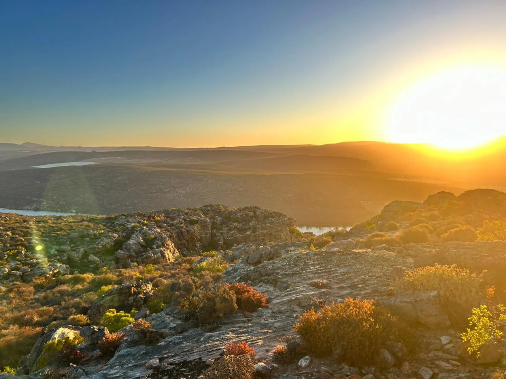

Our Story
A sanctuary in the silence.
Built with intention
Born from a love for the Cederberg.
Nardouw was created as a place for couples to reconnect and experience the landscape in its simplest form.
After returning home from time spent in the United States, Mario began building the eco-conscious cabin by hand in 2021 on the family farm. With research, persistence and the help of close friends, the retreat took shape and welcomed its first guests in 2023.
Designed intentionally for two, the cabin sits quietly in its surroundings, offering privacy, simplicity and room to disconnect from daily noise.
Mario personally welcomes guests and remains available during each stay. Hosting here is about care, presence and making the experience feel easy and special.
Mario, Owner & Host

The location
Northern Cederberg. Open sky. Profound quiet.
Set on the northern edge of the Cederberg Mountains, the retreat is surrounded by rugged sandstone formations, endless skies and deep silence.
Guests can explore hiking trails, ancient rocks, seasonal wildflowers, fynbos and world-class climbing, or simply stay put and absorb the stillness.
